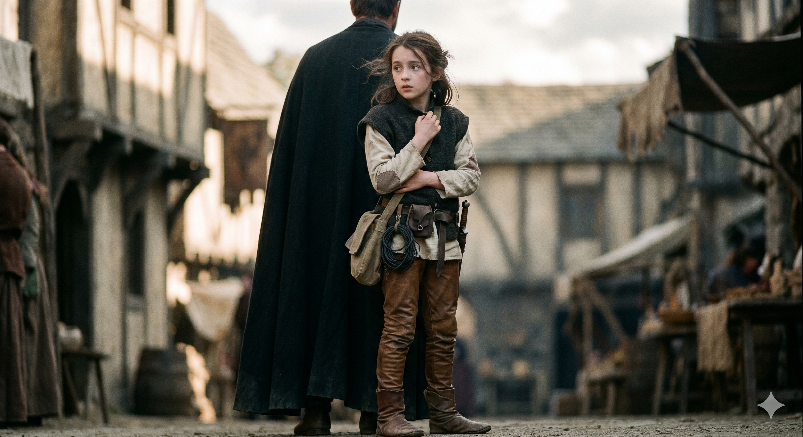

Appears in: Couch Potato Chaos, Couch Potato Crisis
Profile

-
Appears in: Couch Potato Chaos, Couch Potato Crisis
-
Aliases: Pan
-
Cross-book continuity: Appears in both books.
-
Role: Thief-turned-summoner and one of the emotional centers of the series; the party’s figment specialist and the person whose childhood need literally brought Ari into existence.
-
Personality: Shy, stammering, and physically fragile, but consistently brave when it matters. Pan’s courage expresses itself quietly — she does not boast or posture, but she holds the line in combat and refuses to take morally compromising shortcuts even when the system pushes her toward them (she refuses to sacrifice Naclorien for XP). Her stutter and small frame make her easy to underestimate, which suits her thief training perfectly. Beneath the timidity sits a fierce, stubborn loyalty: once Pan adopts someone as family, she will move mountains for them. Across both books she grows from a nervous child hiding behind Ari into a multi-summon specialist who can maintain three figments simultaneously and unlock the legendary Final Summon — all while still a kid. Her driving emotional goal is making Ari permanent, and she pursues it with a determination that outpaces most adult characters.
-
Backstory: Pan was abandoned in infancy by her mother, who judged her stats and congenital conditions as burdens not worth raising. Left alone and desperate, the infant Panella instinctively summoned a figment — a powerful, protective father figure she named Ari (Aralogos). Through sheer summoner power and emotional need, she kept him anchored in reality long past the point any figment should persist. They eventually reached the town of Wilmarth, where [Mad Marina](./character-mad-marina.html) took them in. Marina became Pan’s surrogate grandmother, mentor in lightning magic, and long-term guardian. Ari functioned as Pan’s real parent — the only one she ever knew. Their bond is the series’ clearest example of chosen family. Spindra, Marina’s research partner, also provided higher-dimensional guidance that helped Pan understand and develop her summoner abilities. Libra the eidolon delivered prophecies that shaped Pan’s path.
-
Significant story events:
- Chapter 4 — The Pugilist and the Thief (Chaos): Pan and Ari meet Tasha in the [Temple of the Player](./location-temple-of-the-player.html). Pan is introduced as a shy thief with a protective “father.” Their alliance begins.
- Chapter 6 — Boss Fight (Chaos): Pan contributes her thief skills and Steal ability during the Master Glove boss encounter.
- Chapter 26 — Secrets and Revelations (Chaos): Pan’s backstory begins to surface. The party learns there is more to Ari’s existence than a normal family relationship.
- Chapter 27 — [Mad Marina](./character-mad-marina.html) and the Phantom Child (Chaos): Full revelation — Pan summoned Ari into existence as an abandoned infant. Marina’s role as guardian and mentor is established. The truth that Ari is a figment, not a biological father, recontextualizes their entire relationship.
- Chapter 24 — Attack of the Flying Monkeys (Chaos): The summoner class is explored; only children can use it fully because figments depend on imagination. Pan’s age makes her one of the rare effective summoners.
- Chapter 1 (Crisis): Pan, Hermes, Ari, Slimon, and Kaze face a revenge quest against the Jabberwock. Pan retrieves Tasha from the save point after Murderjoy kills her and abducts Kiwi.
- Chapter 14 — Pollyanna (Crisis): Pan debuts her swashbuckler figment, Pollyanna — an elegant, severe combat specialist who embodies Pan’s tactical thinking and who explicitly rejects fair play as a strategy.
- Chapter 19 — Freefall (Crisis): Pan unlocks Igrius, a fire-based figment summonable only with open sky. She can now maintain three figments simultaneously, a major milestone in her summoner development.
- Chapter 24 — The Final Summon (Crisis): Pan unlocks Final Summon, the capstone ability she has sought since learning Ari’s nature. It can make a figment permanent — but the cost is devastating: multiple summoners must permanently lose the summoner class. This is the culmination of Pan’s arc across two books.
- Chapter 30 — The End of Zhakara (Crisis): Pan’s figments contribute directly to the final battle, with Pollyanna, Igrius, and Ari all active.
- Naclorien encounter: Pan is forced into a situation where she is expected to kill Naclorien for XP but refuses — an important moral choice that defines her character.
-
Notable Quotes:
“He’s not just a figment. He’s my dad. He’s the only dad I’ve ever known.” — Chapter 27, [Mad Marina](./character-mad-marina.html) and the Phantom Child (Chaos). Pan defends Ari’s personhood when the truth of his nature is revealed.
“I don’t care what it costs. I’m going to make him real.” — Chapter 14, Pollyanna (Crisis). Pan states her long-term goal of using Final Summon to make Ari permanent, foreshadowing the sacrifice to come.
“You can’t ask me to kill someone just because the system says it gives me experience. That’s not who I am.” — Inferred from the Naclorien encounter. Pan refuses to sacrifice a sentient being for XP, establishing her moral boundary against the game system’s cruelty.
-
Relationships:
- Ari / Aralogos (adopted father / figment): The central bond of Pan’s life. She summoned him into existence as an infant and he raised her as his daughter. They are each other’s only family. Pan’s entire arc across both books is driven by her desire to make him permanent.
- [Tasha Singleton](./character-tasha-singleton.html) (close friend): Their bond is one of the emotional centers of the series. Pan befriends Tasha in the [Temple of the Player](./location-temple-of-the-player.html) and their friendship deepens through shared danger and loss.
- [Mad Marina](./character-mad-marina.html) (mentor / surrogate grandmother): Guardian, teacher, and protector who gave Pan and Ari shelter in Wilmarth. Shaped Pan’s magical development and emotional growth.
- [Princess Kiwi](./character-princess-kiwistafel-questgiver.html) (friend): Fellow member of the core heroic fellowship. They share a warm friendship across both books.
- Denver (mount / companion): Pan rides and trusts the velociraptor, showing a rider-mount bond built on genuine care.
- Spindra (guide): Provides higher-dimensional reasoning and prophecy guidance that helps Pan understand her summoner powers.
- Libra (prophetic guide): The eidolon of information delivers prophecies that shape Pan’s movements and goals.
- Pollyanna (figment): Pan’s swashbuckler figment, embodying her tactical mind and willingness to fight dirty when necessary.
- Igrius (figment): A later fire-based figment, summonable only under open sky, representing Pan’s expanding power.
- Queen Murderjoy (enemy): Murderjoy threatens Pan directly and endangers everything she cares about.
- [Lord Hempledon](./character-lord-hempledon-of-wilmarth.html) (oppressor): The local tyrant of Wilmarth who exploits and threatens Pan, Ari, and Marina.
- Panella’s mother (estranged / absent): Abandoned Pan in infancy after judging her stats and disabilities as burdens. The wound defines much of Pan’s early emotional landscape.
-
References: Couch Potato Chaos: Chapter 4 - The Pugilist and the Thief, Chapter 6 - Boss Fight, Chapter 24 - Attack of the Flying Monkeys, Chapter 26 - Secrets and Revelations, Chapter 27 - [Mad Marina](./character-mad-marina.html) and the Phantom Child, Epilogue | Couch Potato Crisis: Couch Potato Crisis, Freefall, McBreakfast Sandwiches, Pollyanna, The End of Zhakara, The Final Summon